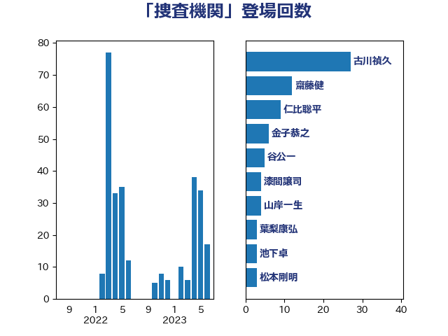

単語「捜査機関」

| 古川禎久 | 自由民主党 | 27 回 |
| 上川陽子 | 自由民主党 | 21 回 |
| 菅義偉 | 自由民主党 | 19 回 |
| 金子恭之 | 自由民主党 | 6 回 |
| 山岸一生 | 立憲民主党 | 4 回 |
| 城井崇 | 立憲民主党 | 3 回 |
| 森まさこ | 自由民主党 | 3 回 |
| 清水貴之 | 日本維新の会 | 3 回 |
| 熊田裕通 | 自由民主党 | 3 回 |
| 加田裕之 | 自由民主党 | 2 回 |
| 山下雄平 | 自由民主党 | 2 回 |
| 武田良太 | 自由民主党 | 2 回 |
| 清水真人 | 自由民主党 | 2 回 |
| 石川大我 | 立憲民主党 | 2 回 |
| 鈴木義弘 | 国民民主党 | 2 回 |
| 井上信治 | 自由民主党 | 1 回 |
| 今井絵理子 | 自由民主党 | 1 回 |
| 前川清成 | 日本維新の会 | 1 回 |
| 加藤勝信 | 自由民主党 | 1 回 |
| 吉川赳 | 無所属 | 1 回 |
| 塩村あやか | 立憲民主党 | 1 回 |
| 安江伸夫 | 公明党 | 1 回 |
| 宮本徹 | 日本共産党 | 1 回 |
| 小野田紀美 | 自由民主党 | 1 回 |
| 山本太郎 | れいわ新選組 | 1 回 |
| 山添拓 | 日本共産党 | 1 回 |
| 新垣邦男 | 立憲民主党 | 1 回 |
| 有村治子 | 自由民主党 | 1 回 |
| 柚木道義 | 立憲民主党 | 1 回 |
| 梅村聡 | 日本維新の会 | 1 回 |
| 森山浩行 | 立憲民主党 | 1 回 |
| 池下卓 | 日本維新の会 | 1 回 |
| 津島淳 | 自由民主党 | 1 回 |
| 田村智子 | 日本共産党 | 1 回 |
| 福山哲郎 | 立憲民主党 | 1 回 |
| 米山隆一 | 立憲民主党 | 1 回 |
| 紙智子 | 日本共産党 | 1 回 |
| 赤池誠章 | 自由民主党 | 1 回 |
| 近藤和也 | 立憲民主党 | 1 回 |
| 鈴木英敬 | 自由民主党 | 1 回 |
| 階猛 | 立憲民主党 | 1 回 |